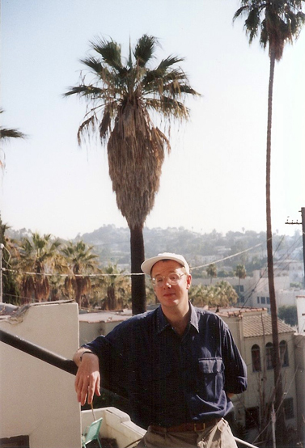
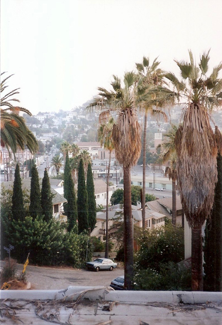
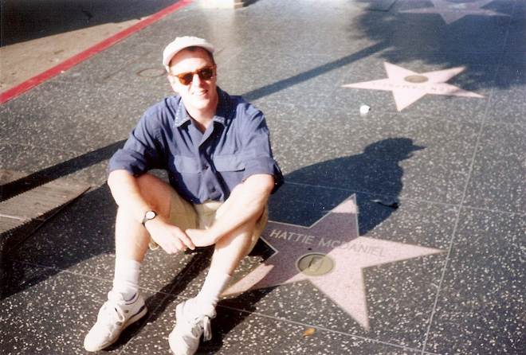
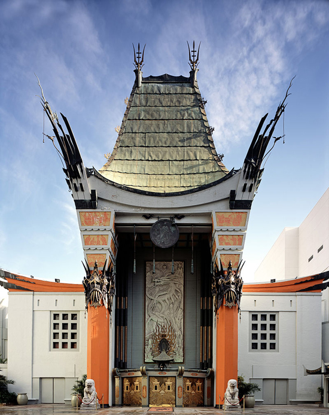
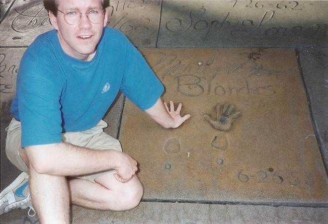
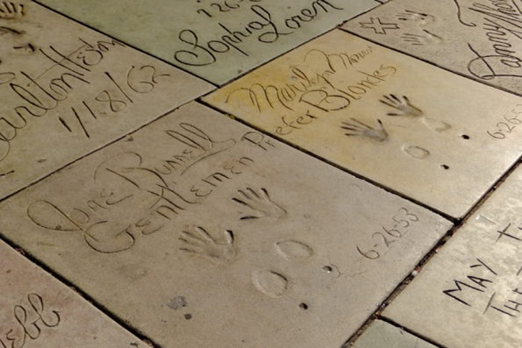
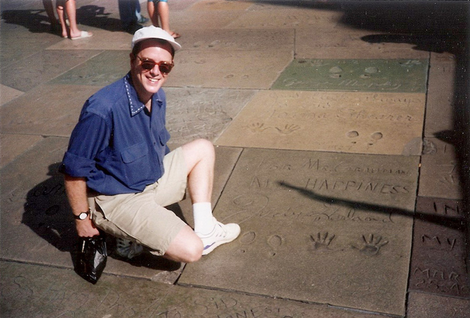
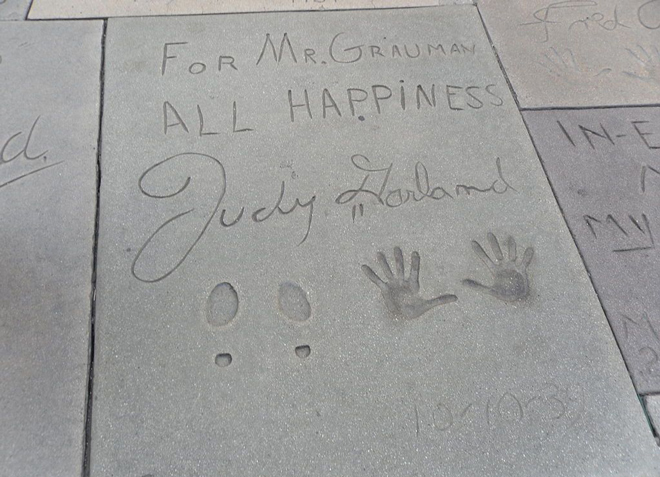
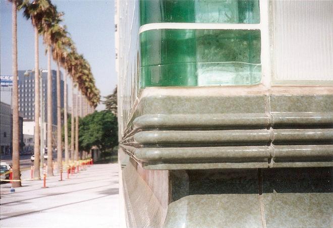
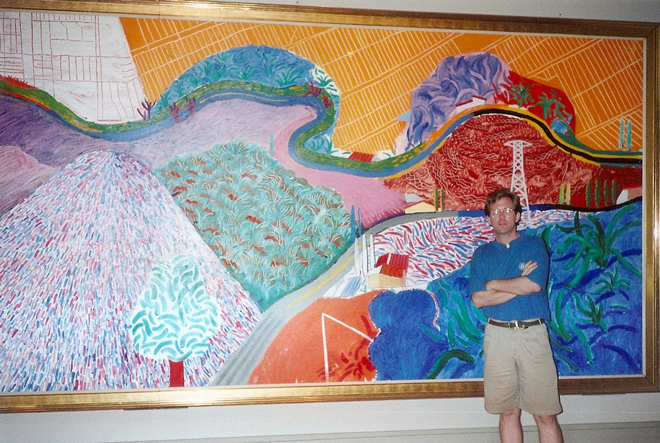

Celeste was camera-shy and refused to let us take her photo. She lived on Sunset Boulevard ("the rough end" as she explained) but you could (just) see the Hollywood sign on the hills if you stood on a chair in her kitchen ...
We went to downtown Hollywood to see the Walk of Fame along Hollywood Boulevard and three blocks of Vine Street. Here is me next to the star for Hattie McDaniel (Gone With The Wind).

Then onto Grauman's Chinese Theatre to see its most distinctive features - the concrete blocks set in the forecourt, which bear the signatures, footprints and handprints of popular film stars from the 1920s to the present day.
The original Chinese Theatre was commissioned following the success of the nearby Grauman's Egyptian Theatre, which opened in 1922. Both are in Exotic Revival style architecture. Built by a partnership headed by Sid Grauman over 18 months starting in January 1926, the theatre opened on 18 May 1927, with the premiere of Cecil B. DeMille's The King of Kings. It has since been home to many premieres, including the 1977 launch of George Lucas' Star Wars, as well as three Academy Awards ceremonies.






